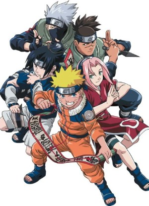
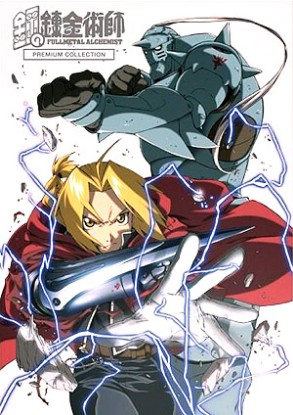

3.)NARUTO

Type: TV Series
Plot Summary:
In a world of mystical and powerful enemies lurk in every nation, a legendary Nine-Tailed Demon Fox attacked the ninja village Konoha, killing many innocent people
In response of a desperate measure from the people, the leader of the village – the Fourth Hokage – sacrificed his life to defeat the demon fox.
By sacrificing his own life, he sealed the demon fox into a very young boy named, Naruto Uzumaki. Naruto has lost his parents during the attack.
He grew up in the village and was mistreated badly by everyone in town. With his loud mouth and careless attitude, he is determined to become the greatest ninja, hokage, in his village. Along with friends, and hope, Naruto trains to become a better ninja than expected.
Genre: Action, Comedy, Martial Arts, Shounen, Super Power
Released: 2002
Status: Completed
|
4.) FMA:BROTHERHOOD

Type: TV Series
Plot Summary:
Two brothers lose their mother to a un-curable disease. With the power of “alchemy”, they use taboo knowledge to resurrect her. The process fails, and as a toll for using this type of alchemy, the older brother, Edward Elric loses his left leg while the younger brother, Alphonse Elric loses his entire body. To save his brother, Edward sacrifices his right arm and is able to affix his brother’s soul to a suit of armor. With the help of a family-friend, Edward receives metal limbs – “Automail” – to replace his lost ones. With that, Edward vows to search for the Philosopher’s Stone to return him and his brother to their original bodies, even if it means becoming a “State Alchemist”, one who uses his/her alchemy for the military.
Genre: Action, Adventure, Drama, Fantasy, Magic, Military, Shounen
Released: 2009
Status: Completed
|